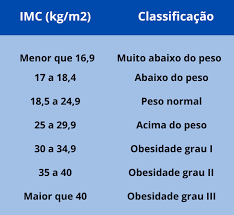

Falando sobre IMC

Como é feito o cálculo de IMC ?
O IMC é calculado dividindo o peso (em kg) pela altura ao quadrado (em m), de acordo com a seguinte fórmula: IMC = peso / (altura x altura).
O resultado de IMC é dado em kg/m2.
Como interpretar o resultado de IMC?
Depois de obter o resultado de IMC, deve-se interpretar o valor utilizando a seguinte tabela:
IMC Classificação
Menor que 18,5 Magreza
18,5 a 24,9 Normal
25 a 29,9 Sobrepeso
30 a 34,9 Obesidade grau I
35 a 39,9 Obesidade grau II
Maior que 40 Obesidade grau III
De acordo com o resultado de IMC também é possível prever o risco que cada pessoa tem de desenvolver doenças crônicas. Isto porque quanto maior é o valor do IMC, maior é a quantidade de gordura acumulada no corpo e maior o risco de doenças como pressão alta, diabetes e problemas cardíacos.
O que significa IMC ?
IMC é a sigla de Índice de Massa Corporal, um parâmetro que é utilizado para avaliar se o peso está dentro do valor ideal para a altura.
Isso significa que, a partir do resultado do IMC é possível saber se a pessoa está acima ou abaixo do peso recomendado e também diagnosticar problemas de saúde como obesidade ou desnutrição.
O IMC pode ser utilizado em crianças, adolescentes, adultos ou idosos.